Krock mellan det gamla och det nya
Vår nuvarande samhällsmodell är i otakt med tiden
"Metamorfosen vi ser handlar om att lämna en industriell logik och omfamna nya modeller för att förstå och forma framtidens
samhälle.”
En av de största utmaningarna är att vår nuvarande samhällsmodell bygger på modernitetens linjära och mekanistiska principer som inte längre fungerar i en komplex värld. Den här synen där samhället ses som en maskin som kan analyseras och repareras i delar, fungerar inte längre i många sammanhang. Det är ett sätt att tänka som är bra för så kallade komplicerade problem – där vi kan förstå, bryta ner och lösa saker steg för steg. Men för komplexa problem, där allt är sammankopplat och återkopplat, fallerar detta synsätt.
Ett bra exempel är journalsystemet Millennium i Västra Götalandsregionen som infördes hösten 2024, som är byggt på en förlegad filosofi och där man försökte implementera det på ett linjärt sätt. Som att byta ut ett kugghjul i en maskin. Det fungerar helt enkelt inte när vi har att göra med stora, komplexa förändringar i sociala system.
Vi är också bundna av många etablerade normer, organisationskulturer och till och med lagar som inte alltid matchar dagens behov – såsom exempelvis lagen om offentlig upphandling i Sverige. Den är baserad på en god tanke – att undvika korruption och hushålla med skattemedel. Och den fungerar bra för saker som är tydligt definierade, som att köpa in toapapper till ett kommunhus. Men när det gäller komplexa sammanhang, där kravspecifikationer inte kan förutses i detalj, blir det problem. Vi tvingas definiera vad vi vill ha, innan vi verkligen vet vad som behövs.
Det här speglas också i hur beslut fattas i organisationer. Ledningsgrupper eller kommunfullmäktige vill ha tydliga garantier för att en investering kommer att leda till ett specifikt resultat. Men i komplexa sammanhang kan vi inte alltid veta det. Det är en slags självbedrägeri som vi behöver komma bort från.
Vi måste odla en kultur där vi vågar pröva, testa och förändra oss längs vägen. Att misslyckas ska inte ses som ett nederlag utan som en del av processen.
Att förstå logiken bakom transformation
Första steget i att jobba med transformation innebär att förstå att en värld i transformation är komplex, föränderlig och oförutsägbar. Den insikten hjälper oss också att förstå vilka typer av förmågor som behöver byggas, och hur man behöver leda och organisera annorlunda för att bidra till transformation .
I kapitel 2 pratade vi om förändringar av olika slag och historiska exempel, men vad är alternativen till den logik som tidigare präglat vår (västerländska) samhällsmodell?
Härnäst går vi igenom ett par grundläggande perspektiv som hjälper oss att förstå skeenden på djupet och hitta nya vägar framåt – grunden för en transformationsförståelse. Vi presenterar några modeller och teorier som inspirerar oss i vårt eget arbete och när vi stöttar andra i transformation. Här tar vi upp:
- Systemtänkande
- Komplexitet och komplexa system
- Systemisk transformation
- Trädgårdsmästarens perspektiv – att förstå övergången
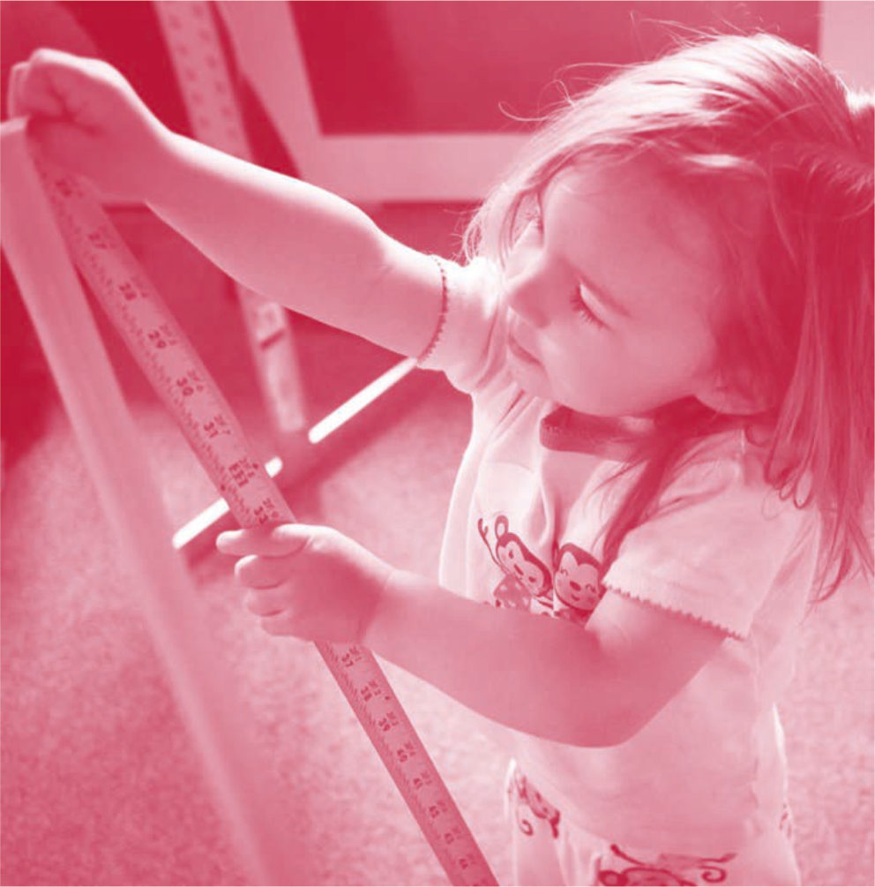
Systemtänkande
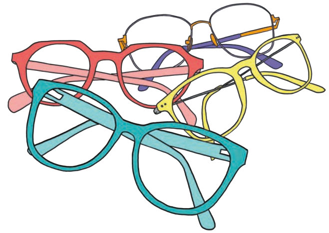
Att se världen som system
Det är viktigt att känna till skillnaden mellan infallsvinklar och olika abstraktionsnivåer. Denna skillnad kan förstås på följande sätt.
System kan beskrivas som flera delar som är ömsesidigt sammankopplade, beroende och påverkande. Som arbetar tillsammans för att uppnå ett gemensamt mål, såsom ekosystem eller organisationer. Systemet är större än dess delar, snarare består det av interaktionerna mellan dessa.
- Vi kan t.ex. analysera ett system utifrån ekonomi, politik, juridik, kultur. Detta ger olika infallsvinklar och samma abstraktionsnivå.
Exemplen på system är oändligt många och varierande i skala: en människokropp, ett hav, en skog, en organisation, en familj, en dator osv. Alla dessa är system. Vissa av dessa system är levande (som en människokropp) medan andra är icke-levande (som en dator).
Eftersom system omfattar ett brett spektrum av aspekter, relationer och dynamik, innebär arbetet med system ofta att man måste utforska dem ur olika perspektiv. En bättre förståelse för sammanflätade orsaker, konsekvenser och oklarheter hjälper oss att ta ett större ansvar när vi navigerar transformation.
Följande sidor går in på några av de val vi gör när vi förstår system, och hur de här valen påverkar hur vi ser på system och därmed potentialen till förändring.
- Detsamma gäller när vi beskriver ett system med hjälp av syn, hörsel, känsel, lukt och smak. Beskrivningen skulle ge mycket olika infallsvinklar på systemet, men med liknande abstraktionsnivå.
- Om vi däremot skulle beskriva ett system med avseende på både ekonomi och hörsel skulle beskrivningen ge oss mycket olika infallsvinklar och mycket olika abstraktionsnivåer.
Vi bör undvika att blanda abstraktionsnivåer. Att se till att olika vinklar delar samma abstraktionsnivå är viktigt på grund av vad som händer när vi kombinerar två olika beskrivningar av samma system. Det vill säga, kraften i att involvera flera vinklar ligger inte bara i vad varje vinkel kan bidra med som en separat pusselbit. Värdet ligger i hög grad i samspelet och kombinationen av två beskrivningar. Syftet med att arbeta med vår naturliga process att kombinera och beskriva är att skapa utrymme för förändring, anpassning och flexibilitet.
Hur vi beskriver påverkar hur vi förändrar
När vi arbetar med system spelar det roll hur vi väljer att beskriva dessa system. Oavsett hur vi väljer att beskriva ett visst system måste vi alltid komma ihåg två viktiga saker.
- Alla beskrivningar vi gör är just det – beskrivningar. De kan hjälpa oss att förstå ett system, men de är inte själva systemet. Eller som Alfred Korzybski uttryckte det: "En karta över territoriet, inte själva territoriet” (Bateson, 1979, s. 30).
- Alla beskrivningar är i sig ofullständiga och stämmer inte överens med det faktiska systemet: Många system är i ständig förändring och förskjutning, och därför kommer våra beskrivningar av dessa system alltid att hamna efter i förhållande till vad som faktiskt händer. Eftersom många system innehåller oändliga aspekter och dynamik, är det omöjligt att fånga systemets bredd och djup i en beskrivning.
- En beskrivning av ett system är en modell – och en modell är definitionsmässigt en förenkling av det den avser att beskriva. Vissa aspekter framhävs, på bekostnad av andra. Förhoppningsvis är modellen användbar och meningsfull, trots sina begränsningar. Och den kan ibland kompletteras med en eller flera andra modeller – för en djupare förståelse.
Om vår förståelse och våra beskrivningar av system alltid är ofullständiga och eftersläpande, varför bryr vi oss då överhuvudtaget om att studera och leka med förståelse och beskrivningar? Som människor deltar vi oundvikligen i processen att göra beskrivningar, oavsett om vi gör det medvetet eller ej.
Poängen med en uppmärksamhet på detaljer är inte att skapa beskrivningar som perfekt liknar verkligheten. Att försöka bli den bästa nya realistiska konstnären skulle vara en omöjlig uppgift, dömd att misslyckas. Att studera och engagera sig i beskrivningsprocessen med mer uppmärksamhet på detaljer, är snarare en möjlighet att hitta nya sätt att förhålla sig till det system du beskriver. Tänk till exempel på hur olika förhållningssätt du skulle kunna ha till en människokropp (ett levande system) som fallit offer för krig.
Om du läser i tidningen att ”ytterligare ett liv har tagits”, beskrivs den människokropp som drabbats av kriget som en enkel siffra, ”1”. Men så läser du offrets dagbok där detaljerade beskrivningar ges om den rädsla som detta offer uthärdar närmare dödsögonblicket. Detta förändrar inte bara ditt sätt att förhålla dig till den enskilda människokroppen, utan det kanske till och med förändrar ditt sätt att förhålla dig till kriget i fråga. Det kan till och med leda till att du vidtar åtgärder för att bidra till att bekämpa kriget och sträva efter en förändring.
Det vill säga, hur en beskrivning påverkar ditt sätt att se på ett system kan i sin tur påverka vilka åtgärder du – eller någon annan – väljer att ta, eller låta bli att ta. Det är en förändringsmöjlighet i sig.
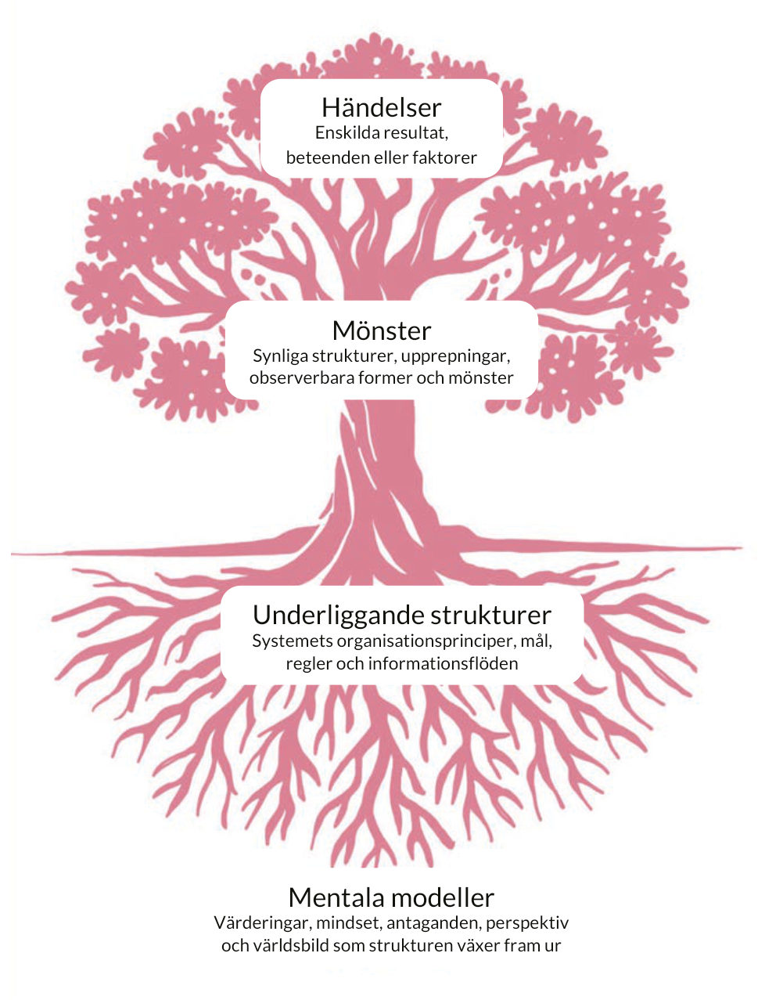
Underliggande strukturer Systemets organisationsprinciper, mål, regler och informationsflöden
Mentala modeller Värderingar, mindset, antaganden, perspektiv och världsbild som strukturen växer fram ur
Systemnivåer och sammankopplingar
När system ändras så sker det på olika nivåer samtidigt, eftersom olika nivåer eller lager i systemet är i ständig interaktion och påverkar varandra.
Vi kanske bara märker eller upplever systemtransformation tydligt genom konkreta händelser som påverkar oss direkt, till exempel plötsliga storskaliga uppsägningar. De djupare lagren av systemtransformation kopplade till dessa händelser som utvecklas och påverkar oss under en längre tidsperiod - är mer osynliga för oss.
Dessa återspeglas istället genom framväxande samhällstrender och mönster, de utgörs av underliggande systemstrukturer som manifesteras genom våra institutioner och genom våra mentala modeller.
Det finns olika ramverk som kan hjälpa oss att förstå denna flerskiktning, ofta i termer av det som vi kan observera och det som är osynligt – till exempel i form av isbergsmodeller (såsom Donella Meadows och Edgar Schein) .
Ett annat sätt att se på det är som ett träd. Det blir tydligt att systemet lever, förändras och påverkas av sådan som myllan och de vindar som blåser. Vi kan också se hur olika förutsättningar gör att helt olika typer av träd växer upp. Vi ser hur rötterna upptar väl så mycket plats som kronan. Ofta pratar man om fruktträd eftersom man ser på frukten som resultatet - äpplena som enskilda händelser som karaktäriserar hela trädet.
Integralteori
Ken Wilbers integralteori sammanlankar olika tearier om manniskan och samhallet till en
meningsfull helhet. Teorin beskriver forandring genom fyra domaner som utgors av dimensionerna, individue/1 vs. kollektiv och intern
(osynlig) vs. extern (synlig).
Forandringar i tankesatt representerar till
exempel den mer osynliga (interna) aspekten av omvandling pa individniva. Utveckling av nya
kompetenser som gar det mojligt for individer att navigera i system- omvandling i en komplex och
oforutsagbar varld, representerar den mer synliga forandringen i individers beteenden.
Pa kollektiv niva handlar forandring i kulturen som gemensamma varderingar och normer - om en mind re synlig del av systemomvandlingen.
Kulturen paverkar mer i det tysta, i kontrast till
nya processer och strukturer som ar mer synliga,
externa och direkt markbara i samma omvandling.
Ken Wilber (2000). A Theory of Everything: An Integral Vision for Business, Politics, Science, and Spirituality. Boston: Shambhala.
Illustration: Nina Bozic baserat pa Ken Wilber
65
66
------------------------------------------------------ - ..
I I I I I I I I I I
I I Reflektlonsf ragor:
I I
Se pa de tva modellerna som beskriver systemnivaer och sammankopplingar.
•
I I I • I I
Vad ar likt och vad ar olikt?
Kan du identifiera nagra forandringar som pagar i din egen organisation i de olika lager/ dimensioner som beskrivs i modellerna? ---------------------------------------------------- - -
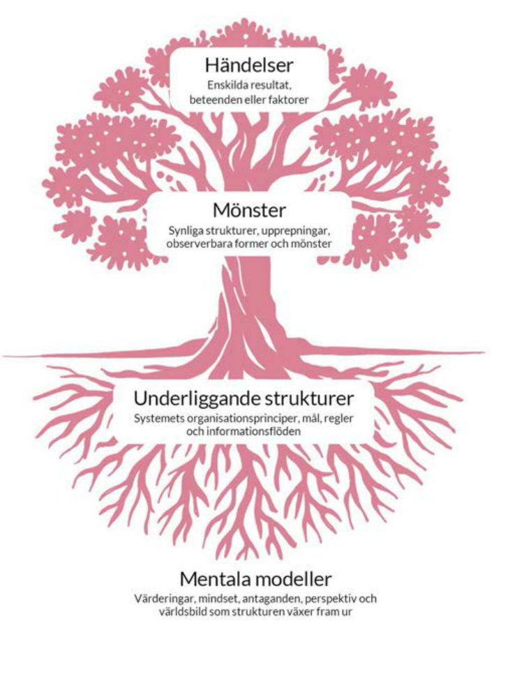
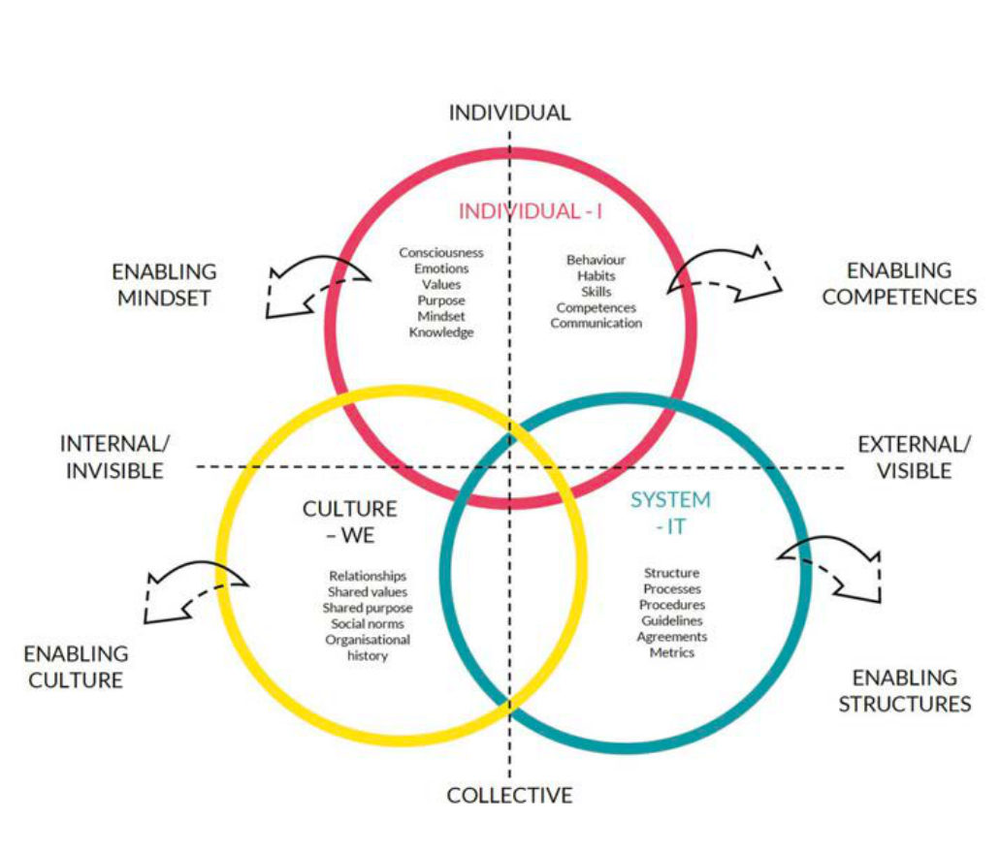
Illustration: Martin Borjesson & Lisa Carlgren, Nina Bozic baserat pa Ken Wilber
Komplexitet och komplexa system
Vad är komplexitet och varför blir det komplext?
Komplexitet handlar om situationer eller system som består av många delar som påverkar varandra på sätt som gör det svårt att förutse resultat eller förstå hela bilden.
Ju fler parametrar som interagerar, ju mer som är dynamiskt, osynligt eller oförutsägbart – desto högre grad av komplexitet. Komplexitet uppträder när tillräckligt många dynamiska och samverkande faktorer samverkar. Det kan handla om exempelvis:
- Människor och allt vad det innebär att vara mänsklig: behov, beteenden, interaktioner, känslor, förväntningar, agendor, normer, relationer, förtroende.
- Organisationer och allt som händer i och mellan dem: kultur, struktur, ledarskap, historik, maktförhållanden, cementerade arbetssätt.
- Krångliga system-samband och paradoxer: motstridiga principer och policy, politik, relationer institutioner emellan.
- Stora skiften och snabba förändringar: klimatkris, accelererande digitalisering, geopolitiska spänningar, nya interaktionsmönster som möjliggörs av teknik, populism – osv.
- Framtid: det som ännu inte finns, oanade möjligheter och svårigheter.
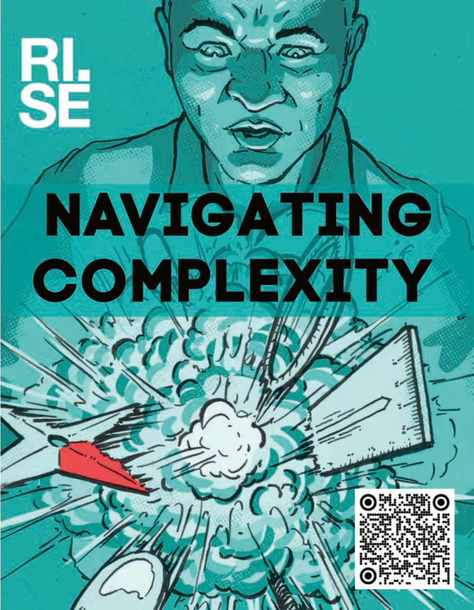
I rapporten Navigating Complexity (Carlgren och Glaser, 2019) utforskas komplexitet med teoretiska perspektiv, korta berättelser, konkreta tips och förslag på övningar för att öva förmågan att navigera komplexitet.
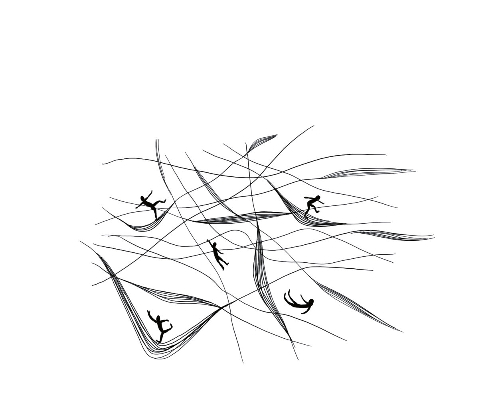
Vad kännetecknar komplexa system?
Komplexa system kännetecknas av att de är:
- Sammanvävda: Många beroendeförhållanden och interaktioner mellan komponenterna gör att små förändringar kan ha stora och ibland oväntade effekter.
- Föränderliga (adaptiva): Komplexa system förändras över tid, ibland på sätt som utmanar traditionella förklaringsmodeller eller lösningar.
- Oförutsägbara: Utfallet av ett skeende eller förändring kan endast förstås i efterhand, vilket gör planering och förutseende utmanande.
- Emergenta: Nya mönster och beteenden växer fram och kan uppstå spontant ur interaktionerna inom systemet, vilket gör att helheten blir mer än summan av dess delar (mer om emergens i kapitel 5).
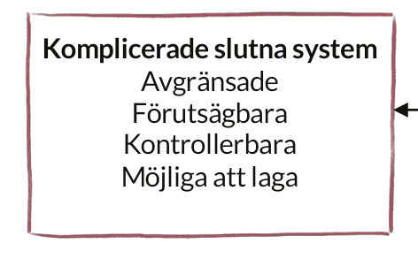
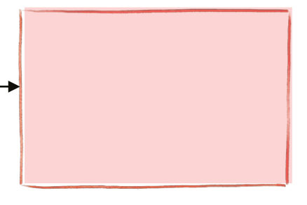
Komplexa – öppna system Omöjliga att avgränsa Oförutsägbara Okontrollerbara Självläkande Ständigt föränderliga
Om man accepterar att större delen av världen är komplex, och är villig att navigera komplexiteten istället för att motarbeta den, så finns möjligheter till lärande, relationer, nya sätt att skapa mening och förändring.
Fokus på kontroll och expertkunskap
Fokus på framväxande mönster och relationer
Olika grad av komplexitet kräver olika angreppssätt: Cynefin
Ett vanligt insteg för att förstå mer om hur man kan navigera komplexitet är Cynefin-ramverket som utvecklats av Dave Snowden och Mary Boone. (Kraftigt) förenklat så visar den hur olika grader av komplexitet kräver olika typer av angreppssätt, beslutsfattande och ledarskap, enligt figuren nedan:
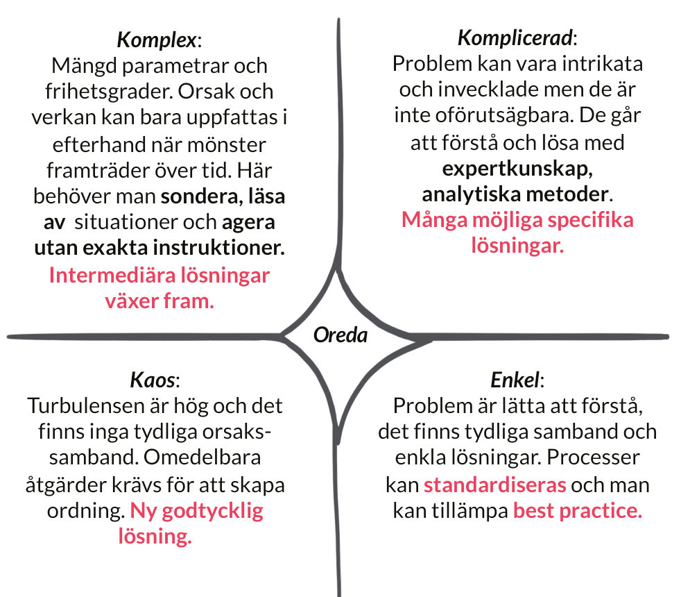
Komplicerad: Problem kan vara intrikata och invecklade men de är inte oförutsägbara. De går att förstå och lösa med expertkunskap, analytiska metoder. Många möjliga specifika lösningar.
Komplex: Mängd parametrar och frihetsgrader. Orsak och verkan kan bara uppfattas i efterhand när mönster framträder över tid. Här behöver man sondera, läsa av situationer och agera utan exakta instruktioner.
Kaos: Turbulensen är hög och det finns inga tydliga orsakssamband. Omedelbara åtgärder krävs för att skapa ordning. Ny godtycklig lösning.
Enkel: Problem är lätta att förstå, det finns tydliga samband och enkla lösningar. Processer kan standardiseras och man kan tillämpa best practice.
Historiskt har vårt samhälle varit starkt präglat av en komplicerad världsbild (att förstå världen som komplicerad), särskilt under 1900-talet och industrisamhället. Komplicerade system är förutsägbara, har tydliga gränser och kan både kontrolleras och åtgärdas med expertkunskap. De liknar maskiner som kan plockas isär i delar och lagas. Arbetet bygger på logiken om separerade delar och på tydliga, linjära samband mellan orsak och verkan. Detta synsätt har genomsyrat inte bara industrin utan även skapandet av offentlig sektor, utbildningssystem och andra institutioner.
Med en komplicerad världsbild löser man svåra problem med hjälp av kunnigare experter, djupare analys, fler verktyg, mer resurser, och genom att dela upp problemen i mindre delar.
Men idag rör vi oss alltså mot en värld som präglas av ökande komplexitet. Komplexa adaptiva system är just det: oförutsägbara, okontrollerbara och ständigt föränderliga. Det finns inga garantier för resultaten och vi kan inte förutse exakt vad vi kommer att behöva på förhand. Osynliga parametrar och samband slår undan benen för analytiskt tänkande, vi kan inte längre dela upp problem i isolerade beståndsdelar. Det komplicerade sättet att förhålla sig till problem och system fallerar.
I komplexa adaptiva system och situationer behöver utmaningar adresseras med flexibla, iterativa tillvägagångssätt och en medvetenhet om att varje ingripande kan få oväntade konsekvenser.
Både Cynefin-ramverket och sättet vi beskriver den på är förenklade. De flesta situationer inte är så lätta att kategorisera, och de kan ändra karaktär längs vägen. De kan bestå av lager med olika grad av komplexitet, mer eller mindre synliga beroende på perspektiv och hur man interagerar med situationen. Till exempel, att hantera en komplex situation med spända relationer som något som enkelt kan lösas, kan skapa ännu mer spänning.
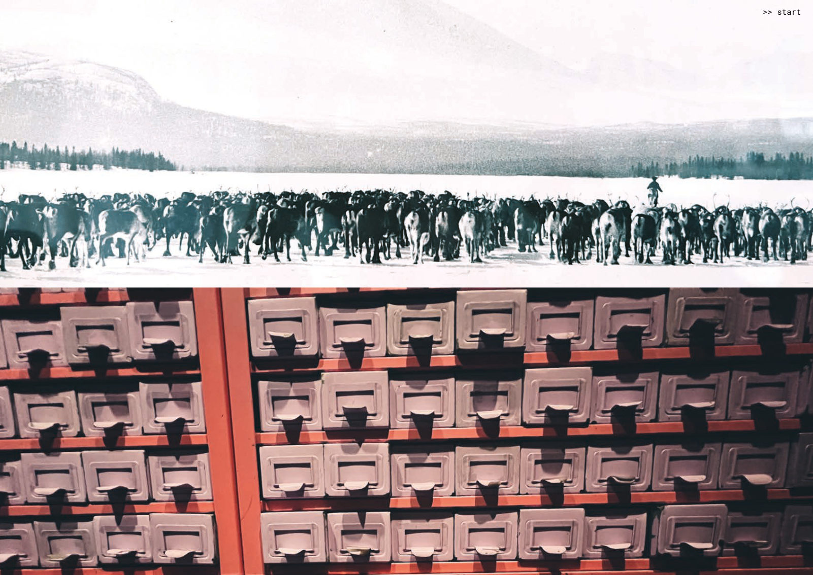
Sarek, sent 1960-tal. Skulle det gå att förstå komplexiteten och problematiken kring urfolk och deras rättigheter genom att dela upp situationen i delar, och öppna en låda i taget tills man hittar den rätta?
Att navigera en komplex värld genom sammanvävning av perspektiv (combining)
I komplexa levande system kan vi inte få de direkta resultat vi kanske hoppats på, eftersom vi inte kan laga enskilda delar för att åtgärda helheten – så som vi kan i komplicerade system, exempelvis maskiner.
Det innebär att i komplexa system kommer saker att ske som en följd av våra handlingar, utan att vi alltid kan spåra eller koppla dem till specifika orsaker. Vissa variabler påverkar andra i kedjor av händelser som är ömsesidigt beroende av varandra, vilket i sin tur skapar nya möjligheter vi inte kan förutse i förväg.
Nora Bateson skriver om combining, eller sammanvävning. För att kunna hantera komplexitet krävs nya sätt att kombinera perspektiv och sammanhang. Det går inte att göra utifrån statiska, beräknade eller förutbestämda lösningar. Vi behöver istället möta variabler i ständig rörelse från en plats av personlig och nära förståelse. Vi behöver aktivera alla våra sinnen och känslor för att kunna ta in de många lager av komplexitet som finns, utan att reducera dem till något förenklat.
Nora Bateson tar människor på flykt som exempel och poängterar att vi måste kunna möta flyktingar som människor, snarare än att avhumanisera dem eller reducera dem till ”de där” eller ”andra”, som utgör enbart en kostnad för samhället eller som konkurrerar om ”våra” jobb.
Att fastna i sådana förenklingar gör att vi blundar för att miljontals människor kommer att fortsätta tvingas fly på grund av miljömässiga, ekonomiska och politiska omvälvningar – och att ”de där andra” en dag kan vara vi själva. Att skapa fiendebilder, särskilt av människor med behov, leder sällan någonstans. Vi kan bara möta den typen av komplexa utmaningar om vi ser varandra som faktiska människor, inte som kategorier av människor. Om vi ser varandra som individer med berättelser och erfarenheter – och om vi har en vilja att hjälpa varandra.
”Preparation for future events is not a matter of knowing or planning what will happen, but of learning to be flexible to respond as needed in context”
Nora Bateson, Combining: p.13.
“To live in another way.
At first, it appears that it is the parts of the system that must be made better or fixed.
Then, it becomes clear that the system is not in the parts – it is in the relationships between them.
So, it seems like it is the relationships that need to be made better or fixed.
But relationships, it turns out, are made of communication.
And then – The communication becomes the place to address the needed adaptations.
And then – you realize
what is communicated is not what is expressed or even what is not expressed
– it is what it is possible to express.
That is where the limits move, in the combining.
How shall I tend to the premises of what is possible to communicate?”
Nora Bateson, Combining: p.5
Vad innebär en komplicerad världsbild för organisationer i en komplex värld?
När vi förstår våra organisationer som komplicerade system så leder det till en specifik typ av organisationsstruktur, ledningsstil och syn på medarbetare. Vi kommer att fokusera på optimering och effektivitet, mäta output per timme, tillämpa ett kortsiktigt perspektiv och lägga fokus på att lösa problem när de uppstår. Detta synsätt har sina rötter i moderniteten, och grunden för att hantera organisationer utifrån denna logik lades av taylorismen eller det vetenskapliga ledarskapet som utvecklades av Frederick Taylor*.
I ett samhälle som är byggt på det komplicerade paradigmet – med tydliga regler, mätbara resultat och strukturerade lösningar – blir komplexa problem en stor utmaning. Vi saknar metoder för att hantera dessa så kallade ”wicked problems”**, eftersom de inte går att definiera eller mäta på samma sätt som komplicerade problem.
Att hantera en komplex situation som om den vore komplicerad är dömt att misslyckas. Därför behövs en medvetenhet om komplexitet, och sätt att hantera komplexa problem och situationer.
Forskning om designpraktik och komplexa adaptiva system visar oss att vi för att för att kunna orientera oss i komplexa system och komplexa organisationer - behöver bland annat följande:
- Fokusera på framväxande mönster och relationer. Navigera genom att prova någonting, se hur systemet reagerar, göra en förändring och prova igen.
- Jobba med systemperspektiv: Lösningar kräver att man ser systemet som en helhet snarare än att fokusera på dess enskilda delar.
Hur förändras organisationsstrukturer om vi istället börjar betrakta organisationer som komplexa system, och riktar fokus mot de andra typer av förmågor som behöver byggas? Nästa sida visar en jämförelse.
Organisationer som styrs som komplicerade system
Organisationer som styrs som komplexa system
Organisation
Ledarskap
Medarbetare
Toppstyrd hierarki (reaktiv)
Effektivitet / Planera-kontrollera-mäta
Kortsiktigt perspektiv
Funktionsuppdelning / Homogena silos
Fast struktur / Byråkratisk styrning
Konkurrens
Makt utgår från toppen / centrum
Styrning
Universella lösningar
Formellt
Individfokus
Säkerställa tydlighet, stabilitet och förutsägbarhet
Medarbetare som passiva produktionsenheter
Tydligt definierade arbetsbeskrivningar
Formell utbildning
Kognitiva färdigheter i fokus
Stämpla in och ut
Nedifrån-och-upp-emergens (experimenterande)
Relationer, mening, syfte och värdeskapande i fokus
Balanserar kortsiktigt och långsiktigt perspektiv
Multifunktionellt, holistiskt och integrerat
Adaptiv struktur med många perspektiv
Samarbete
Flera samverkande maktcentra
Möjliggörande snarare än styrande
Kontextsberoende
Informellt
Delat / kollektivt / distribuerat ledarskap
Omfamnar tvetydighet, osäkerhet och förändring
Medlemmar / samskapande partners
Flytande roller
Kontinuerligt lärande i arbetet
Människan som helhet i fokus
Syftesdrivet arbete
Illustration: Nina Bozic
Systemisk transformation
Transformation är svårare än omställning
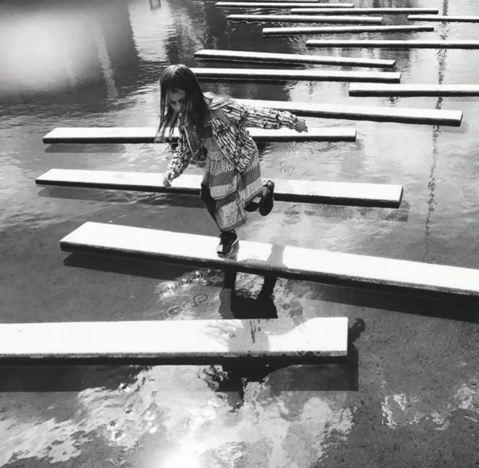
En omställning eller transition handlar om en övergång från ett tillstånd till ett annat, där båda är väldefinierade och kända.
Det gamla lever kvar i hög grad, om än förändrat. Logikerna – de underliggande tankesätten - är liknande och kommer till hög grad att samexistera. Ett bra exempel är fossildriven till grön energi - och materialproduktion.
Transformation handlar om ett genomgripande skifte från något som vi känner till väl, till något nytt som är mycket mer okänt.
På förhand har vi inte de begrepp, modeller och tankefigurer som behövs för att förstå eller ens uttrycka vart vi är på väg. När vi står mitt i transformationen har vi bara en rudimentär och fragmentarisk bild av vart vi är på väg – målbilden är något som kommer att växa fram och utvecklas på sikt, parallellt med att det nya tar form. Det nya växer fram medan det gamla omstöps eller försvinner, själva logiken som samhället bygger på blir radikalt annorlunda. Det gamla kommer inte leva kvar, men delar kan ha förändrats och har en roll i det nya.
Systemisk transformation - på alla nivåer
Systemisk transformation är en djupgående förändring på djupet som omformar ett systems strukturer, processer och underliggande logik. Att den är systemisk innebär att det inte bara handlar om förändring av enskilda delar, utan att förändringen påverkar hela systemets funktion, komplexitet och dynamik.
Förändringen utgår från och inkluderar skiften på systemets djupaste nivåer. Det som ändras är systemets underliggande förutsättningar vilket ger upphov till en helt ny systemlogik.
Systemisk transformation kan ske på flera nivåer men i olika takt och ofta asynkront. Små, till synes inkrementella steg som sprider sig till systemets djupare nivå kan resultera i en radikal transformation. Förändringens frön kan sås på olika nivåer – till exempel kan det visa sig att nya begrepp och språkbruk på djupet förändrar hur vi interagerar, vilket i sin tur omformar våra logiker, normer och till slut även strukturer och policyer.
Systemisk transformation handlar därför inte bara om att ändra regler eller organisationer – det handlar om djupgående förändringar som har effekter på hela systemet.
En ny kultur framträder som ett mönster i samspelet mellan underliggande strukturer och mentala modeller, och det är därför den är så svår att ändra. Men för att etablera en ny kultur måste dessa två växa ihop på ett nytt sätt.
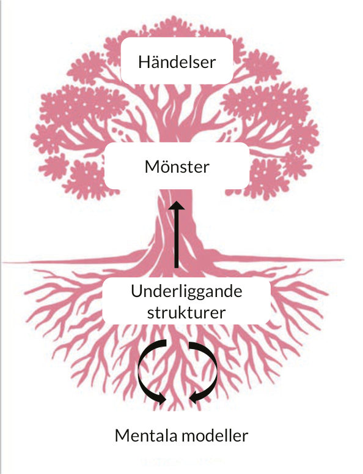
Ett trestegsexempel från den digitala världen:
1. Digitisering:
Handlar om att omvandla analoga processer eller material till digitalt format. Ett exempel är att skanna in papper för att få texten i digitalt format.
2. Digitalisering:
Går ett steg längre och fokuserar på att använda teknik för att förbättra och automatisera processer. Här handlar det om att koppla samman system så att de fungerar smidigare, både internt inom organisationer och mellan företag. Det kan även inkludera att nyttja teknik för att effektivisera ekonomiska kedjor.
3. Digital transformation:
Är den mest omfattande och handlar om en förändring som påverkar hela samhället eller systemet. Det är inte bara en teknisk förändring, utan även en kulturell och beteendemässig omvandling som kan involvera både medvetna och omedvetna förändringar.
Transformationen påverkar både strukturer och individer och drivs och möjliggörs av digitalisering, men innefattar också hur vi anpassar oss till nya modeller. Processen har inte alltid en tydlig riktning och den involverar både medvetna och omedvetna förändringar.
Två loops-modellen, transformationens logik
Transformation för ofta tankarna till det nya som växer fram, men handlar lika mycket om det gamla som faller sönder. Framväxt och sönderfall sker nästan alltid parallellt, men på olika nivåer och i olika tidscykler. Vissa processer rör sig snabbt, medan andra dröjer sig kvar eller omformas i nya skepnader.
Meg Wheatley och Deborah Frieze vid Berkana-institutet har utvecklat en förenklad modell för systemskiften, som illustrerar hur transformation består av två överlappande rörelser: det gamla som förlorar sin relevans och det nya som växer fram i dess ställe.
Två-loopsmodellen är en abstrakt och generisk modell som kan användas för att förstå systemiska transformationer på olika nivåer, allt från samhällsskiften, paradigmskiften till betydligt mindre skiften.
Samhällssystem börjar ofta krackelera när deras interna logik inte längre är i samklang med omvärldens förändringar. Nya teknologier, skiftande sociala mönster och generationsväxlingar kan vara katalysatorer, men processen kan också ske när existerande aktörer omvärderar, experimenterar och förändrar inifrån.
Det är då nya pionjärer träder fram och börjar betrakta det gamla med nya ögon, utvecklar nya metoder och sätter igång förändringsprocesser. Dessa pionjärer formar så småningom nätverk, lär av varandra och utvecklar nya praktiker och idéer. Gradvis växer ett nytt system, med nya strukturer och arbetssätt fram.
När ett nytt system börjar ta form och dess logiker, strukturer och praktiker får allt bredare genomslag, anar vi att ett framväxande system som kan ersätta det gamla. Övergången går till en början långsamt, men när nedmonteringen nått en viss punkt och förtroendet flyttar, hoppar den stora massan snabbt till det nya.
Det etablerade systemet är en kraftfull motpol till förändring eftersom det sitter på resurser, infrastruktur och institutionell legitimitet. Detta fungerar som en hämmande faktor eftersom människor tenderar att följa det som är känt, stabilt och tydligt, vilket skapar en asymmetri mellan det trygga och det som ännu inte tagit form. Att navigera mot ett framväxande system kräver därför inte bara mod, utan också förmågan att skapa tillit till något som ännu är under uppbyggnad.
Spänningen mellan de två looparna ger dessutom upphov till en enorm komplexitet, vilket gör det svårt att bara förstå vad som händer.
Att navigera igenom en transformation handlar alltså både om att fokusera på det som dör, och på det som växer fram. Att någonting dör betyder inte att det försvinner helt – tvärtom kan delar omvandlas och återuppstå i ändrad form.
Stabilisatorer
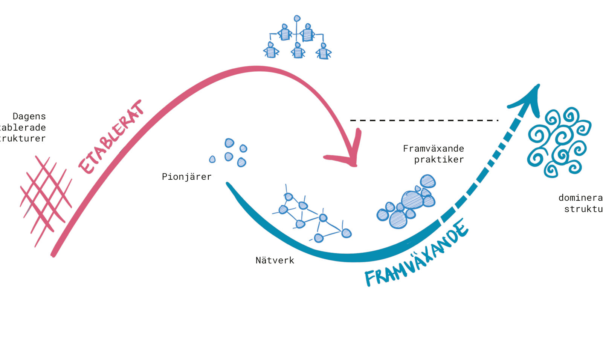
Exempel från praktiken
System som hindrar cirkulär omställning
Cirkulär transformation handlar om att lämna en filosofi där man utnyttjar planeten genom att gräva upp, använda och slänga material, för en där man fokuserar på att återvinna och återbruka material och produkter så långt det går.
Men det kan vara svårt för ett företag som gör stora vinster i det gamla systemet att överge sin affärsmodell till förmån till något där roller, nya marknader och intäktsmöjligheter är oklara, och där få av systemets nya pusselbitar finns på plats.

Det kan också handla om en kortsiktig syn på värdeskapande, intäkter och utgifter, där ett specifikt årligt vinstmål eller en redan slimmad budgetkostym blir viktigare att uppnå, än att se på det värde man kan skapa över tid med ett annat sätt att tänka. Ett där det kanske finns större vinster om man bara har tålamod.
Få politiker och företagsägare har mod tänka nytt kring vinster och kostnader där planetens välbefinnande och gränser räknas in. Om det gjordes skulle inte en ny dörr på Bauhaus kosta 400 kr medan en återbrukad kostar det mångdubbla - förutom allt extra tid och krångel som krävs för hanteringen av en sådan. Men när ingen är beredd att betala, är det svårt att vara föregångare.
Om man ser på instanser som skola, hälso-sjukvård, polisen och andra myndigheter där new public managementlogiken och det filosofen Jonna Bornemark kallar förpappring brett ut sig, så är det svårt att släppa idén om kontroll och detaljer. Det har då blivit en del av ryggraden i systemet – även om alla ser att orimlig tid går åt till att fylla i dokument eller att själva filosofin förhindrar reflektion, kunskapsutveckling och fördjupade relationer. Där värderingsdrivna medarbetare med djup passion för sitt yrke och expertis om vad som är viktigt - inte får vara autonoma eller lägga kraften där de ser att den bäst behövs.
Vem vågar börja nedmontera det som är skadligt men som sitter i väggarna nästan överallt?
U-teorin, faser i en transformation
En modell som är användbar för att förklara olika faser i transformationsprocesser – oavsett om det handlar om individ, grupp, organisation eller samhälle – är U-teorin, utvecklad av Otto Scharmer vid MIT. Denna modell beskriver fem transformativa rörelser: co-initiating, co-sensing, presencing, co-creating och co-evolving.
- Co-initiating (sam-initiera) hjälper oss att sluta använda invanda tankemönster, att tillfälligt lägga våra bedömningar åt sidan. Genom att öppna vårt sinne samt lyssna på andra börjar vi se med nya ögon och upptäcka en gemensam intention.
- Co-sensing (sam-känna) bjuder in oss att fördjupa kontakten med olika människor och miljöer för att ta in flera perspektiv och uppleva systemet genom dess olika lager. Detta sker genom att vi öppnar våra sinnen och vårt hjärta.
- Presencing (sam-vara) låter oss gå ännu djupare genom att vända fokus inåt och släppa taget i en plats av tystnad. Här kopplar vi an till vår vilja och låter en inre förståelse växa fram kring frågor som: Vem är jag? Vad är mitt arbete?
- Från denna plats av inre insikt och presencing kan en ny vision och intention utkristalliseras, vilket leder oss in i co-creating (samskapa), där vi utforskar framtiden genom att pröva nya arbetssätt och experimentera med prototyper i praktiken.
- Detta för oss vidare till co-evolving, där vi börjar förkroppsliga det nya genom att institutionalisera nya metoder och koppla samman förändring på mikro- (individ), meso- (grupp, organisation) och makronivå (samhälle).
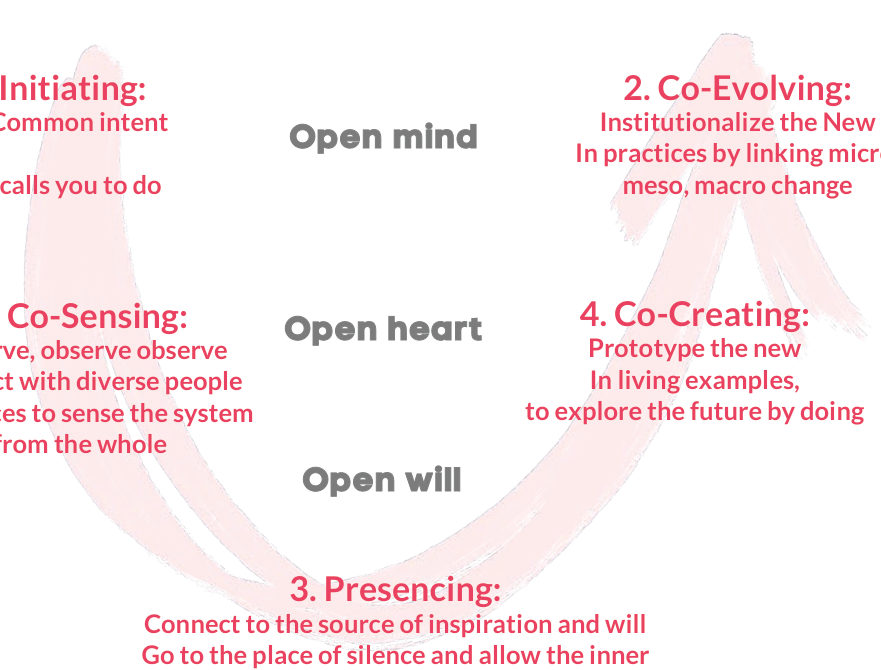
1. Co-Initiating: Uncover Common intent Stop and listen to others and to what life calls you to do
2. Co-Sensing: Observe, observe observe Connect with diverse people and places to sense the system from the whole
3. Presencing: Connect to the source of inspiration and will Go to the place of silence and allow the inner knowing to emerge
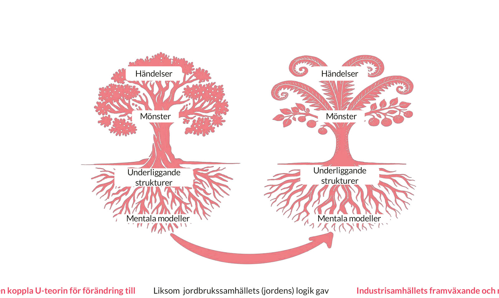
Äppelträd eller ombunkar med bär?
Vi kan även koppla U-teorin för förändring till metaforen om träd. Ett äppleträd är till största delen en konsekvens av flera förutsättningar som är dolda under mark och i trädets gener. Om dessa förutsättningar ändras, till exempel om genernas kombination ändras, kommer de nya förutsättningarna då att producera olivträd? Eller konstiga ormbunkar eller svampmycel med skumma bär vi inte känner till? Oavsett kommer det att ge upphov till en väldigt annorlunda ekologi.
Industrisamhällets framväxande och nu dominerande logik ersatte inte jordbrukslogiken. Den kapslades snarare in i en industriell form och marginaliserades på ett sätt som gjorde den osynlig för nästan hela samhället. Vad vi ser växa fram idag, är ett samhälle där algoritmer och plattformar kapslar in och formar om den industriella logiken. Kommer förändringarna i de underliggande strukturerna förändra samhället så att dagens industriella samhällsform marginaliseras och kapslas in på samma sätt som jordbrukslogiken försvann i den industriella logiken under förra århundradet?
Liksom jordbrukssamhällets (jordens) logik gav upphov till furstendömen och kolonialisering, så gjorde vetenskapens och fabrikernas intåg att förutsättningarna förändrades. Utifrån de nya underliggande förutsättningarna växte ett industrisamhälle fram och marginaliserade jordbrukslogiken. Ur det värdeskapande som tidigare byggde på extraktion av värde från jorden, formades industrisamhällets värdeskapande och sociala organisation runt fabrikens och de välutvecklade transportsystemens logik.
Träd som anpassat sig efter förutsättningarna. Över tid växer här bara träd som klarar av den hårda blåsten på Point Reyes på Stilla havets kust. När klimatet värms upp och vindarna slutar blåsa kanske vi ser en skog med ormbunkar som på dinosauriernas tid?
Transformation som lärcykel
En annan modell som är användbar för att förstå olika faser i systemtransformation är Human Learning Systems Cycle (se bild på nästa uppslag) som utvecklats av Toby Lowe med kollegor.
På liknande sätt som Scharmers U-teori inleds denna cykel med att förstå systemet och etablera ett gemensamt syfte (co-initiating och co-sensing i Scharmers termer). I denna fas kartläggs systemet och dess gränser – vem ingår och vem gör det inte? Här handlar det om att bygga relationer och förtroende mellan aktörer, forma ett gemensamt syfte och synliggöra systemet för dess deltagare. Det handlar också om att möjliggöra ett samskapande lärande om systemet och de faktorer som påverkar det – hur påverkar systemets olika nivåer varandra?
När aktörerna enas om gemensamma principer, värderingar och önskade beteenden (hur vill vi möta varandra?), rör de sig in i en co-designfas (co-creating i Scharmers termer). Här sker olika iterativa cykler av prototypande, där aktörerna lär genom experimenterande, utforskande, reflektion och omdesign. De olika prototyperna som utvecklas parallellt bidrar till att utkristallisera vilka nya arbetssätt och lärdomar om systemet, dess syfte, aktörer och faktorer som aktörerna vill integrera i systemet. Detta är det som co-evolving innebär i Scharmers teori, innan cykeln går in i en ny fas av lärande och utveckling.
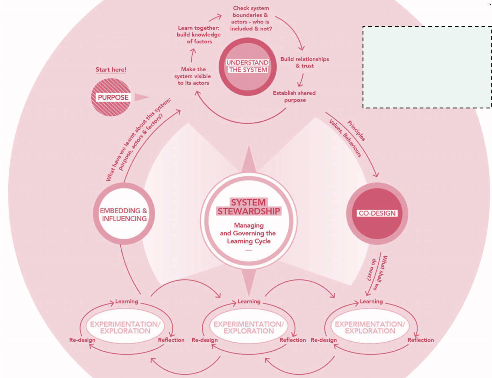
Historiskt sett har samhällen utvecklats genom olika stadier, där en av förändringarna har varit rörelsen från en statligt styrd ekonomi till en mer marknadsdriven ekonomi och vidare mot en ekonomi som drivs av intressenter och systemperspektiv.
Dessa stadier kan existera parallellt inom ett land, och olika länder befinner sig i olika faser vid olika tidpunkter.
I Sverige kan vi till exempel se en tydlig dominans av en intressentdriven socialmarknadsekonomi, samtidigt som vissa delar av samhället strävar mot en mer marknadsorienterad modell. Ytterligare andra rör sig mot en ekonomi som i högre grad bygger på systemperspektiv och samverkan mellan aktörer.
I olika typer av samhällen finns det olika centrala aktörer, samordningsmekanismer och drivande teknologier, vilket i sin tur leder till skilda sätt att organisera samhället och utöva ledarskap.
Till exempel, i ett statligt styrt samhälle är staten eller regeringen den primära aktören, där styrning sker genom hierarkiska strukturer. Den huvudsakliga samordningsmekanismen bygger på ordergivning, och ledarskapet utövas genom centraliserad kontroll, ofta i en auktoritär form.
I en systemdriven ekonomi däremot, är samverkan mellan civilsamhälle, privata och offentliga aktörer central. Här sker samordning genom samskapande och kollektivt ledarskap, där kreativitet och gemensamt ansvarstagande spelar en avgörande roll. Detta möjliggörs av människocentrerade teknologier och självorganisering, snarare än av toppstyrd kontroll.
Stadier i samhällstransformation
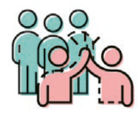
Society 3.0: Stakeholder-Driven, Social-Market Economy
Society 1.0: State-Driven, Mercantilism, Socialism
Society 4.0: Eco-system Driven, Economy
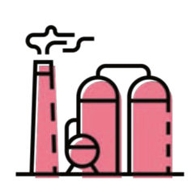
Society 2.0: Free-Market- Driven, Laissez-Faire
Scharmer and Kaufer, 2013
Trädgårdsmästarens perspektiv – att hantera övergången
Perspektivet avgör hur vi förhåller oss till transformation
Trädgårdsmästarens perspektiv
- Ställer kursen mot det övergripande målet
- Utanför och ovanför system
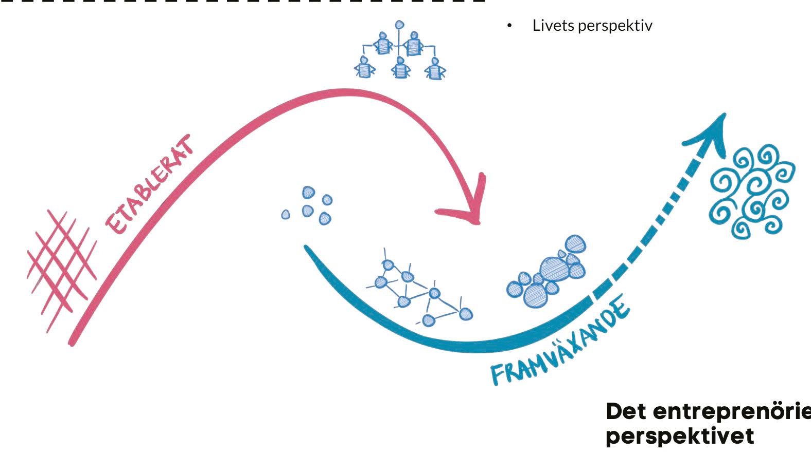
Det dominanta perspektivet
- Systemets överlevnad
- Justera och anpassa
- Mätning och resultat
- Nya tankar och idéer
- Byta ut det gamla
Trädgårdsmästarens perspektiv
Transformationsfilosofin handlar om att försöka förstå och klargöra för oss själva vilket utvecklingsstadium vi egentligen befinner oss i. Här är något vi kallar trädgårdsmästarens perspektiv centralt. I dennes perspektiv ryms den övergripande förståelsen för vad som är det nya och vad som är det gamla, och för transformationsprocesser i sig. Men också en förståelse för vad man vill med sin trädgård. Det handlar om att se när växter behöver dö med värdighet och vilka nya som ska ersätta dem.
Att omsätta perspektivet i praktiken handlar om:
- Att lära sig att utforska och forma det nya.
- Att längs vägen upprätta riktningen och vart vi vill – söka, formulera och härbärgera engagerande och attraktiva bilder och berättelser.
- Att medvetet demontera och dekonstruera de strukturer som inte funkar, de kan komposteras och ge näring åt det nya som kan växa på de fria ytor som öppnas upp. Ett exempel är att arbeta med ”exnovation” (se exempel på sida 252).
Trädgårdsmästaren förstår att en transformation inte kan ske över en natt. De gamla strukturerna är ofta värdefulla, och ibland kanske helt essentiella då de ger oss mat och husrum. Och dessa kan vi inte ha ihjäl – inte förrän det finns nya strukturer på plats.
”Om vi inte aktivt plockar ner dem, så kommer de - liksom i vilken trädgård som helst - att falla ner, och
det blir farligt. Den stora ruttna eken kommer att ramla ner och skada någon. Men om vi i stället inser att eken är rutten och börjar bygga i det lilla - då kan vi kanske till och med se till att den här eken kan
monteras ner bit för bit - på ett sunt och balanserat sätt.”